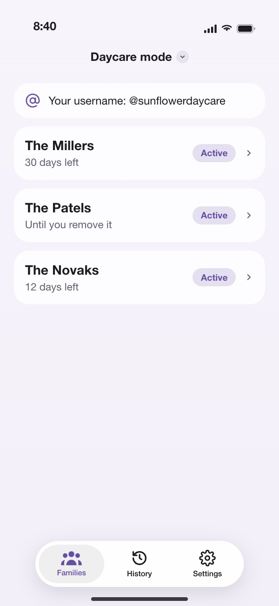
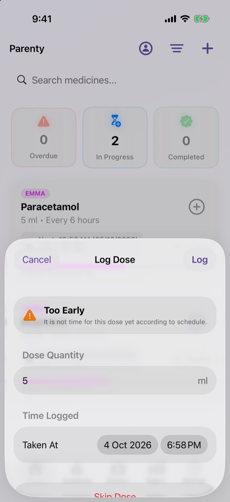
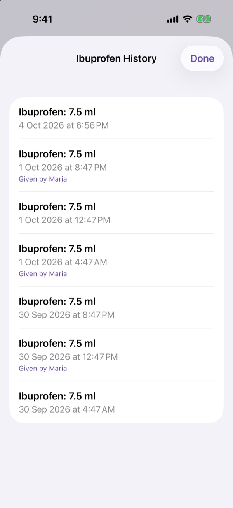
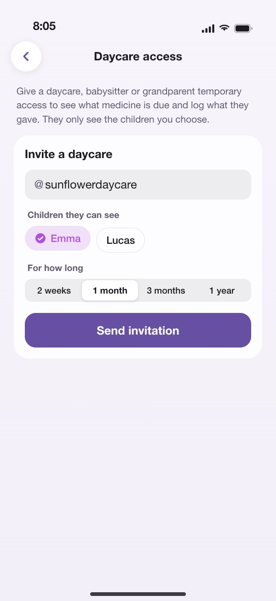
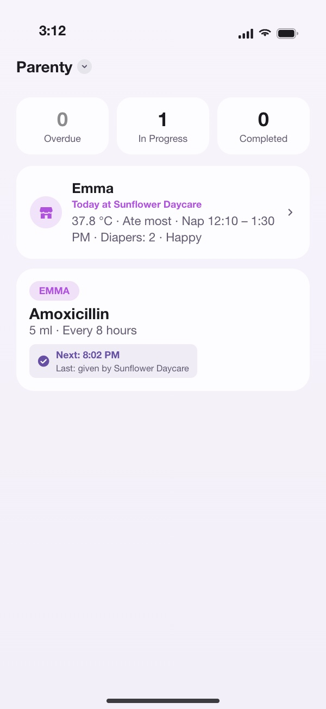
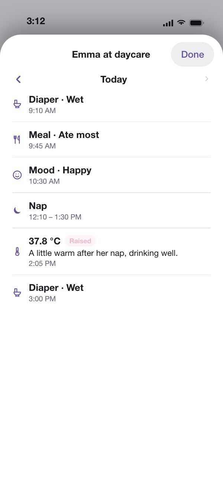
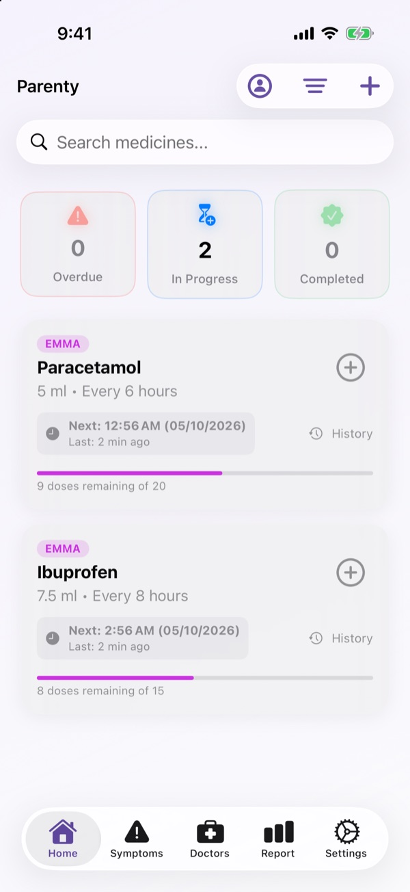
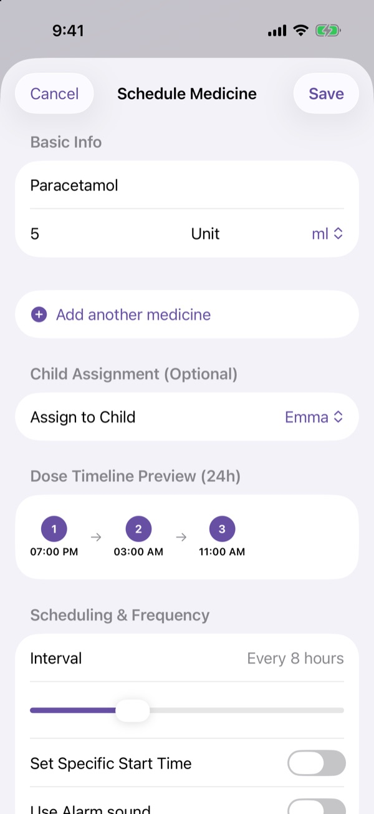
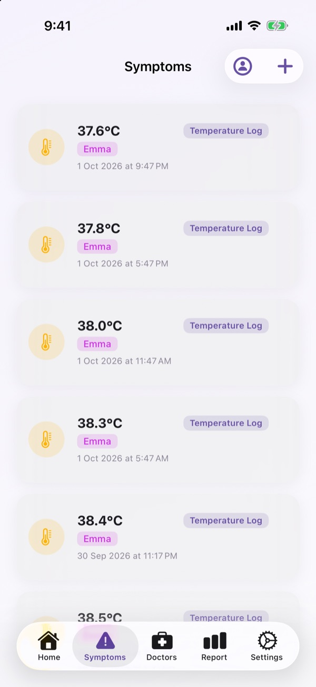

Parenty tiene traccia di farmaci, febbre e visite mediche dei tuoi figli, e tiene sincronizzati tutti quelli che se ne prendono cura, asilo compreso. Cura serena, anche alle 3 di notte.
I farmaci e la giornata di ogni bambino, in un'unica lista.
Vedi cosa c'è da dare ai bambini di ogni famiglia, registra dosi, temperature, pasti e sonnellini, e i genitori lo vedono subito. Parenty per asili

Tutto ciò che serve alla tua famiglia per dare la dose giusta al momento giusto, condiviso con chi aiuta.
Stanco e non sai se è già ora? Parenty ti avvisa quando è troppo presto per la dose successiva e ti mostra esattamente quando è prevista.

Non chiederlo più. Ogni dose registrata da qualcuno compare subito su tutti i telefoni della famiglia — con chi l'ha data e quando.
Il backup nel cloud è gratuito per tutti. La condivisione con la famiglia fa parte di Premium.

Registra una dose o la febbre senza sbloccare il telefono né aprire l'app. Dillo a Siri su iPhone o al tuo assistente su Android, e Parenty lo condivide con la famiglia.
Siri funziona senza configurazione. Su Android funziona con gli assistenti che supportano le azioni delle app, da Android 16 in poi.
L'asilo, la tata o i nonni registrano la giornata, e tu la vedi sul telefono mentre accade.
Invita l'asilo, la tata o i nonni con il loro nome utente o scansionando il loro codice QR. Registrano farmaci, temperature, pasti e sonnellini, e tu vedi la giornata nella schermata Home mentre accade.
Invitare un asilo fa parte di Premium. Estendi o termina l'accesso quando vuoi.
Si configura in un minuto quando lo lasci. Decidi tu chi vede cosa, e per quanto tempo.

Scrivi il nome utente dell'asilo o scansiona il suo codice QR. Scegli quali bambini vede e per quanto tempo.

Una scheda «Oggi a» nella Home riassume la giornata: temperatura, pasti, sonnellini, pannolini e umore.

Tutto quello che hanno registrato, in ordine, con le note. Torna indietro un giorno alla volta.
Pensata per genitori stanchi: grande, chiara e veloce da usare, di giorno e di notte.
Dosi ogni poche ore, per un certo numero di giorni o a orari precisi. Modalità sveglia per quelle da non saltare.
Registra le temperature in °C o °F e i sintomi su una scala da 1 a 5, con note e orari.
Invita il tuo asilo con nome utente o codice QR, e vedi la giornata di tuo figlio nella Home.
Filtra i registri per chi li ha inseriti, tu o ciascun asilo, per giorno o periodo, raggruppati per bambino.
Peso e altezza di ogni bambino, con le curve di crescita dell'OMS.
Il tuo pediatra a portata di tocco. Registra visite e controlli e aggiungili al calendario.
Condividi un riepilogo chiaro di dosi, temperature, sintomi e visite con il medico o al pronto soccorso.
Un profilo con il suo colore per ogni figlio, e filtri per farmaci, registrazioni e visite.
Registra una dose dalla schermata Home, segui il conto alla rovescia sulla schermata di blocco o chiedi semplicemente a Siri o al tuo assistente Android.
Una barra laterale su iPad, entrambi gli schermi su iPhone Duo e le impostazioni affiancate sullo schermo grande.
Blocco facoltativo con Face ID, Touch ID o impronta. Elimina il tuo account quando vuoi. Non vendiamo mai i tuoi dati.
Inglese, arabo, tedesco, greco, spagnolo, francese, ebraico, italiano, portoghese e turco.
Chiaro o scuro, segue il tuo telefono.



“I looked through many medicine tracking apps for something that had a really clear note about when the medicine was last taken and when it was due again. After trying close to 20, I found Parenty and it's been almost exactly what I've been looking for. The developer is also extremely open to feedback and quick to address.”
Tutto ciò che serve per un figlio è gratis. Premium è per le famiglie che condividono la cura, e Parenty Asilo per chi si occupa di molte famiglie.
Gratis per sempre
Mensile o un acquisto unico a vita
9,99 € al mese o 99,99 € all'anno · per asili e chi si prende cura dei bambini
La modalità asilo è gratis per una famiglia invitata da un genitore Premium.
L'app mostra i prezzi nella tua valuta locale.
Ogni account connesso ha un backup gratuito nel cloud, così i tuoi dati sopravvivono a un nuovo telefono e restano aggiornati su tutti i tuoi dispositivi. Con Premium puoi invitare il partner, i nonni o la babysitter con il loro @nomeutente, e ogni dose che registrano compare subito sui telefoni di tutti.
Sì. Con Premium, vai su Impostazioni → Account → Accesso asilo e invitali con il nome utente dell'asilo, oppure scansiona il codice QR che ti mostrano. Scegli quali bambini vedono e per quanto tempo: 2 settimane, 1 mese, 3 mesi, 1 anno o finché non rimuovi l'accesso. Vedono i farmaci di quei bambini, quando è stata data l'ultima dose e quando è consentita la prossima, e possono registrare dosi, temperature, sintomi, crescita e la giornata stessa: pasti, bevande, sonnellini, pannolini, vasino, umore e note. Lo vedi nella Home come «Oggi a» il tuo asilo, ogni voce mostra chi l'ha registrata, e puoi estendere o terminare l'accesso quando vuoi.
Solo i bambini che hai scelto e i loro farmaci, con quando è stata data l'ultima dose e quando è consentita la prossima: non chi l'ha data, e nessuna nota. Un asilo non vede mai le tue temperature, i sintomi, la crescita, le visite mediche, i report o le note, e non può aggiungere, modificare o eliminare i tuoi farmaci o i tuoi figli. La modalità asilo non conserva nulla della tua famiglia sul telefono dell'asilo, e l'accesso si ferma nella data che hai scelto.
Crea un account gratuito, poi passa alla modalità asilo: tocca il titolo in alto sullo schermo o vai su Impostazioni → Modalità app. Imposta il nome e il nome utente del tuo asilo, poi dai ai genitori il nome utente o mostra loro il tuo codice QR. Le famiglie vedono il nome del tuo asilo, mai il tuo account personale. Un asilo gratuito può occuparsi di una famiglia invitata da un genitore Premium; Parenty Asilo (9,99 € al mese o 99,99 € all'anno) è per tutte le famiglie di cui ti occupi e include Premium per la tua famiglia. La modalità asilo richiede una connessione a internet.
Sì. Ogni figlio ha il suo profilo colorato, e puoi filtrare farmaci, temperature, sintomi e visite mediche per figlio. Il piano gratuito include un profilo figlio; Premium sblocca profili illimitati.
Monitoraggio di farmaci e dosi, promemoria, registro di temperatura e sintomi, un profilo figlio, un medico con due visite e backup nel cloud. Premium aggiunge la condivisione con la famiglia, profili e medici illimitati, report PDF, grafici della febbre e impostazioni delle sveglie.
Sì. Su iPhone, di' a Siri frasi come “Registra Ibuprofene in Parenty” o “Quale medicinale è previsto dopo in Parenty?”, senza configurazione. Da Android 16 in poi, gli assistenti che supportano le azioni delle app possono registrare dosi, temperature, peso e altezza e controllare cosa è previsto. Parenty ti avvisa comunque di una dose troppo anticipata, e tutto viene condiviso con la tua famiglia come sempre.
Inglese, arabo, tedesco, greco, spagnolo, francese, ebraico, italiano, portoghese e turco.
Vai in Impostazioni profilo e scegli Elimina account. Il tuo account e i suoi dati nel cloud vengono rimossi.
Verifica che le notifiche di Parenty siano consentite nelle impostazioni del telefono, che una modalità Full immersion o Non disturbare non le silenzi e di avere l'ultima versione dell'app.
Serve altro aiuto? Scrivici a info@parenty.uk
Download gratuito per iPhone e Android.